システム開発パートナー
- 実務経験 10年
- 全6工程に対応
- フリーランス
要件定義・設計・開発・テスト・保守運用 ／ SES・準委任・請負対応。システムエンジニア Yui Kikuchi（屋号 METASYSTEM）の、実績と仕事の進め方をまとめたポートフォリオです。
- 実務経験10年
- 参画プロジェクト8件以上
- 対応工程6工程
- 契約形態SES・準委任・請負
要件定義・設計・開発・テスト・保守運用 ／ SES・準委任・請負対応。システムエンジニア Yui Kikuchi（屋号 METASYSTEM）の、実績と仕事の進め方をまとめたポートフォリオです。
Yui Kikuchi ｜ システムエンジニア（フリーランス）｜ 屋号 METASYSTEM
システム開発の実務経験10年。SIer 案件を中心に、要件定義から保守運用までを一気通貫で対応してきた実務経験があります。エンタープライズ向けの大規模基幹システムでも、品質・納期・報連相を徹底できる体制で稼働します。
いまある体制に、そのまま加われること。それが、選んでいただいている理由です。
既存の開発体制・規約・レビュープロセスに合わせて稼働
日報・週報・課題管理を確実に運用し、リスクの早期共有を徹底
品質・納期を落とさずに調査・製造・ドキュメント作成のスピードを向上
「一時的な増員」でも「特定工程だけの支援」でも対応可能です。案件の規模・体制・商流に合わせて、柔軟な関わり方をご提案します。
要件定義から保守・運用まで、すべての工程に対応します。
工程の流れ
業務ヒアリング・要件整理・要件定義書作成
画面設計・機能設計・外部設計書作成
内部設計・DB設計・詳細設計書作成
コーディング規約準拠・単体テスト仕様書/結果作成
テストケース作成・実施・不具合管理
障害対応・改修・運用ドキュメント整備
要件定義・基本設計フェーズからの参画
現行業務フローのヒアリングから要件定義書・RFP対応資料を作成。
画面設計書・機能設計書を規定フォーマットで作成。レビュー指摘対応まで一貫して対応。
現行機能分析・技術選定・クラウド環境でのPoC、入札に向けたRFP作成。
既存システムのリプレース案件で、移行対象・移行方式・切替手順の要件を整理。
規約遵守と品質担保を両立した製造工程
詳細設計書に基づく製造・単体テスト。コーディング規約 / レビュー体制に準拠。
影響範囲調査 → 改修 → 回帰テストまで対応。障害の再発防止策を提案。
環境構築・デプロイ自動化・監視設定など、開発基盤まわりの整備を支援。
テストケース設計・実施・不具合管理表の運用。テスト消化率の可視化に貢献。
その他：帳票出力改修、API連携開発、バッチ処理開発 等 複数件
止められないシステムを支える運用対応
本番障害発生時の一次切り分け、原因調査、復旧対応、報告書作成。
月次・週次のリリース作業、リリース手順書作成、切り戻し対応。
運用手順書・障害対応マニュアルの整備、属人化の解消。
死活監視・リソース監視の設定、アラート発生時の一次対応フロー構築。
参画した現場で、何がどう変わったか。
Before ｜ 参画前After ｜ 参画後
仕様書とソースの乖離が放置
設計書とソースの整合性を復元
単体テストの証跡が不十分
テストエビデンスを規定様式で整備
結合テストで手戻り多発
影響範囲分析で手戻りを削減
属人化した保守対応
保守手順書を整備し属人化を解消
結合テスト工程での手戻り件数：大幅削減
レガシーからモダンまで。オンプレミスにもクラウドにも対応します。
品質と納期を守るための、効率化の手段として使います。
AIエージェントが現場のルール・工程・既存システムの文脈の中で動けるよう、読ませるもの・使わせる道具・権限・検証のしくみを整え、より効果的な開発を実現
生成AIを活用したレガシーコード解析・仕様書化で、調査工数を削減
規約準拠のコード生成・セルフレビューにAIを活用し、手戻りを削減
議事録・報告書・運用手順書の作成をAI活用で効率化し、報告品質を担保
あくまで「品質・納期を守るための効率化手段」として活用。成果物は既存の規約・体制に準拠します。
客先の規程と環境に合わせて作業します。
NDA締結を前提とした対応。客先の情報取扱規程を遵守
客先の開発環境・セキュリティ規定に応じた作業端末/VPN等の対応
作業ログ・レビュー記録・テストエビデンスなど監査対応可能な証跡を整備
現場スタッフの配置・打刻・日報アプリ
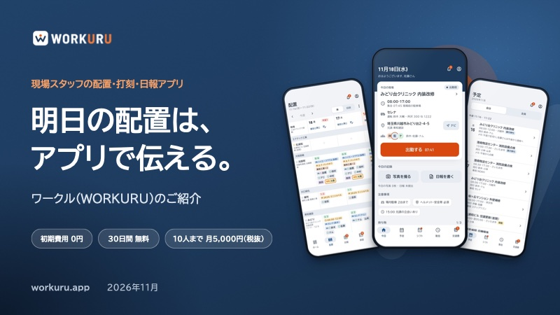

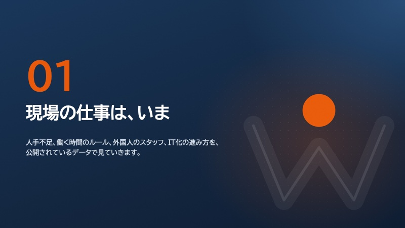


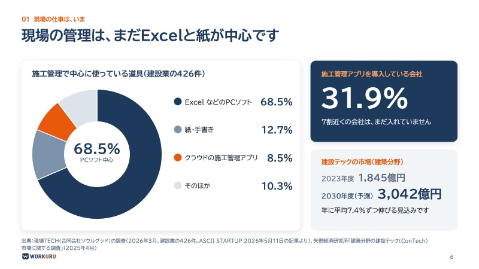

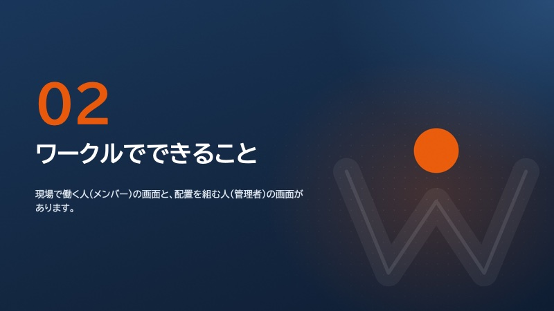
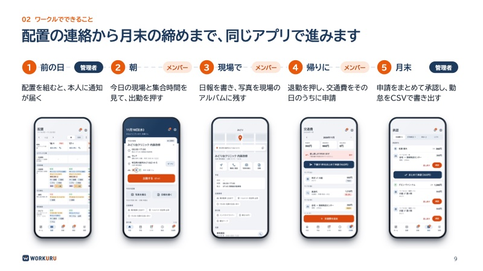
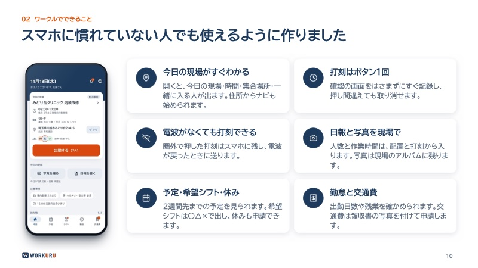
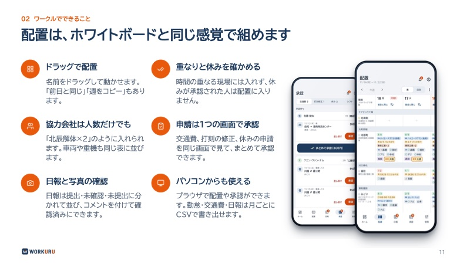

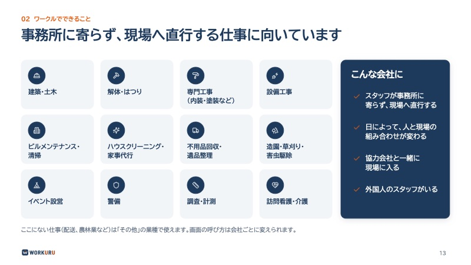
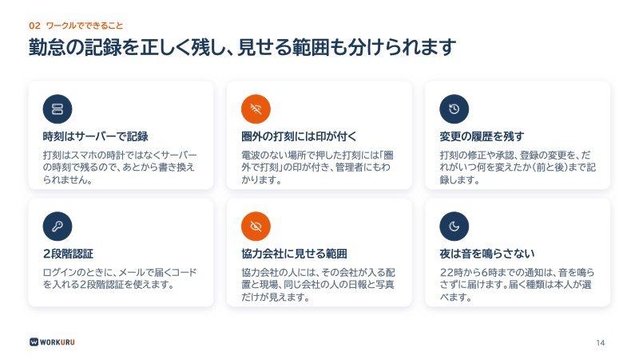


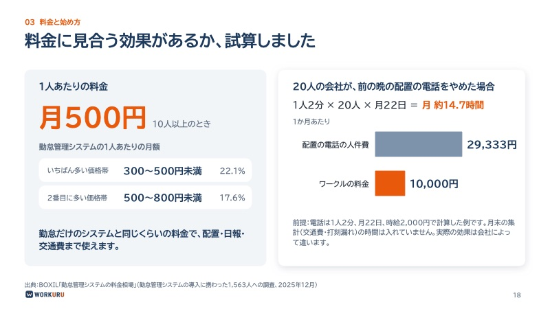

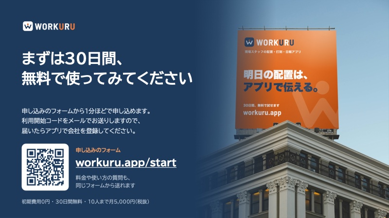
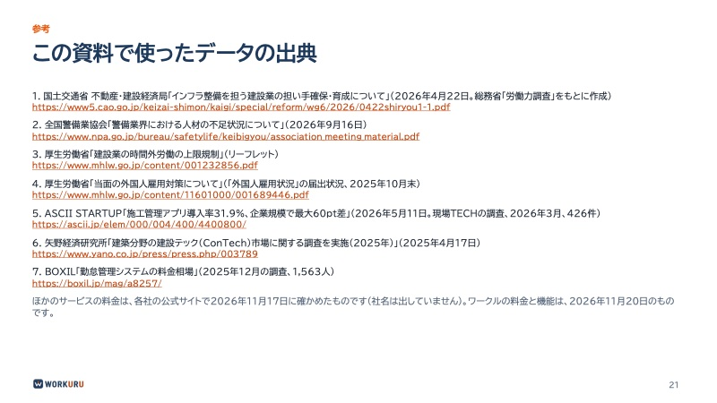
表紙：明日の配置は、アプリで伝える。ワークル（WORKURU）のご紹介
紹介資料をダウンロード（PDF） 21枚・2.6MB。スライドを押すと、大きな画像で開きます。
全国の、ペットと泊まれる宿・ペットと行けるカフェ・ドッグランを探せるサービス
件数は 2026年10〜11月時点。
全国のスマホ修理店を、地図・都道府県・駅・機種から探せるサイト
山形県の4地域（置賜・村山・最上・庄内）のニュースサイトと、まとめて読めるアプリ「山形じゃ〜なる」
案件の規模・体制・商流に合わせて、柔軟に対応します。
まずはスキルシートのご確認から。
案件概要のご共有
オンライン / 対面
契約形態・稼働条件
迅速対応
まずはスキルシートのご確認から。単発の工程支援から長期常駐まで、幅広くご相談に対応します。
ご質問・ご相談はお気軽に。スキルシートは、メールでお送りします。
Yui Kikuchi ｜ システムエンジニア（フリーランス）｜ 屋号 METASYSTEM